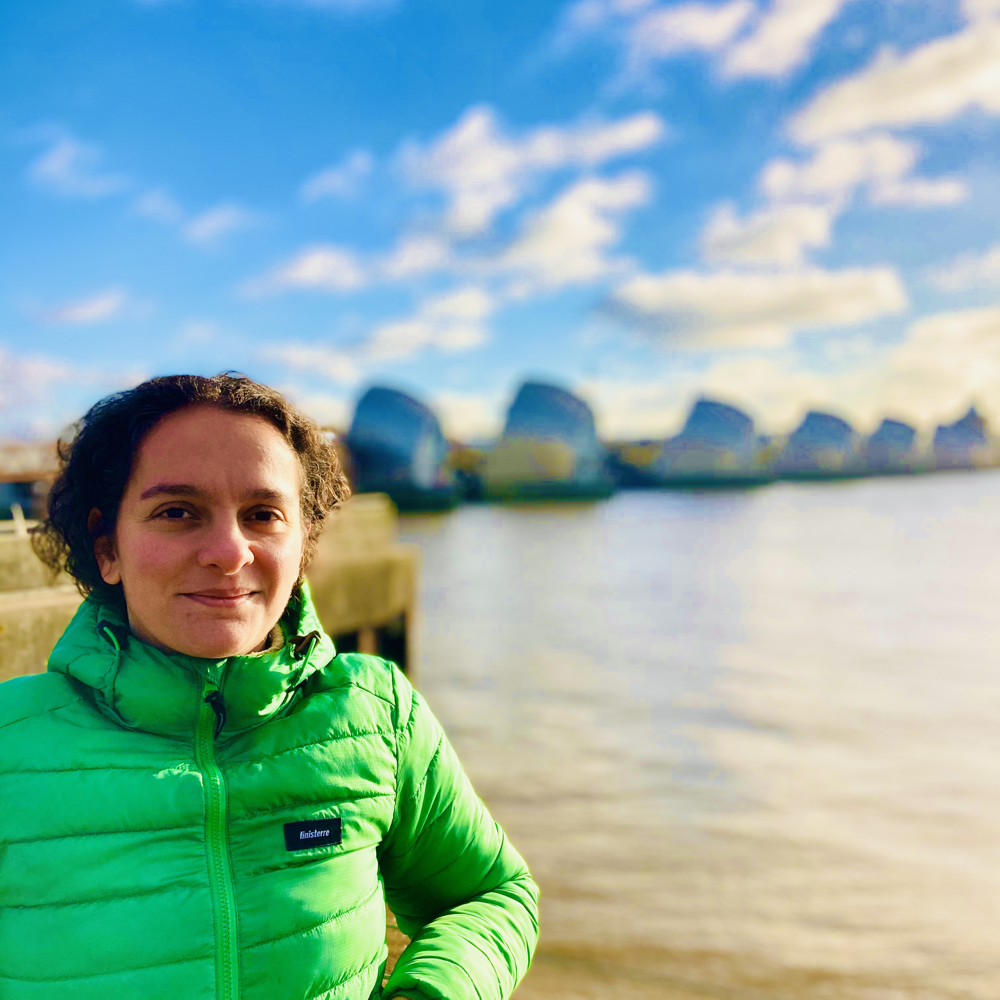

I am an interdisciplinary researcher focused on data-driven research and solutions for the environment, climate and health. My work combines AI, environmental modelling and data science. My research interests include AI for climate, the environment and health, and I am also interested in the sustainability of AI itself.
I earned my PhD from the QUEX Institute (University of Exeter and University of Queensland), working on the climate resilience of urban drainage systems and the role of green infrastructure. Previously, I earned an MSc in Water Engineering with Management from the University of Exeter and a BSc in Chemical Engineering from the Facultad de Ingeniería, Universidad de la República. I've also worked as a postdoctoral researcher at Eawag (ETH Domain), forecasting sewage spills with deep learning; as a water engineer at Arup; and as an Earth observation scientist at Plymouth Marine Laboratory, on the ESA SCOPE, ESA TIME and Simons Foundation CBIOMES projects. You can find my full CV here.
/etc
When I'm not at my desk, I'm usually outside in England's South West. I love Dartmoor; the tors and boggy paths suit me. I'm also working my way along the South West Coast Path, section by section. See the map of what I've walked.